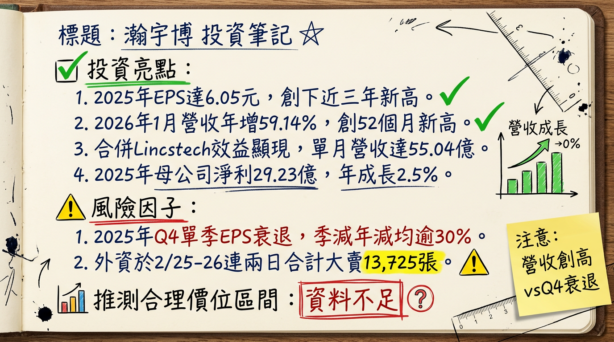

5469 瀚宇博 深度研究報告
一句話摘要
從全球 NB PCB 龍頭轉向 AI 與高階網通的價值重估，2026 年受惠新產能釋放與併購效益，獲利動能強勁。公司概覽
瀚宇博（瀚宇博德）隸屬於 PSA 華科事業群，為全球最大的筆記型電腦（NB）用印刷電路板製造商。近年透過子公司精成科積極轉型，跨足 AI 伺服器、高階交換器及半導體測試板領域。
營收結構（2024 年上半年數據）
| 產品類別 | 營收佔比 | 備註 |
|---|---|---|
| PC/NB 相關 | 44% | 核心業務，佔比隨轉型逐年下降 |
| 伺服器 (Server) | 10% | 含 AI 伺服器，2025 Q3 已突破 20% |
| 車載應用 | 8% | 維持穩定成長 |
| 遊戲機與機上盒 | 6% | 消費性電子應用 |
| 其他 (工控、消費性) | 32% | 包含子公司 Lincstech 挹注之半導體測試板 |
核心競爭優勢
財務分析
近 6 個月營收趨勢表
| 月份 | 營收金額 (億元) | 月增率 (MoM) | 年增率 (YoY) | 備註 |
|---|---|---|---|---|
| 2026/01 | 55.03 | +4.16% | +59.14% | 創 52 個月新高 |
| 2025/12 | 52.83 | +5.23% | +54.18% | 併購效益顯現 |
| 2025/11 | 50.20 | -1.03% | +50.04% | 持續高成長 |
| 2025/10 | 50.73 | -2.98% | +49.03% | AI 板出貨穩健 |
| 2025/09 | 52.29 | +1.03% | +36.41% | 第三季旺季效應 |
| 2025/08 | 51.76 | -2.52% | +29.17% | - |
年度財務指標
| 年度 | 營收 (億元) | EPS (元) | 備註 |
|---|---|---|---|
| 2024 | 416.32 | 5.91 | 實際值 |
| 2025 | 572.26 | 6.05 | 創近三年新高 |
| 2026 (E) | 630~680 | 5.60 ~ 8.85 | 視 AI 產線開出進度而定 |
法說會重點（2025/11/03 重點摘要）
- 訂單能見度： 管理層明確指出，受惠於 AI 加速器及高階高層板需求，訂單能見度已延伸至 2027 年上半年。
- 產能利用率： 台灣觀音廠目前處於 全數滿載 狀態。
- 產能擴充： 預計 2026 年折舊費用將增加 30%，但由營收規模擴大及產品組合優化（高毛利 AI 板）抵銷。
- HDI 目標： 目標 2025 年底將 HDI 板營收佔比提升至 15%。
券商觀點
| 券商名稱 | 日期 | 目標價 | 評等 | 備註 |
|---|---|---|---|---|
| 宏遠證券 | 2025/11/04 | 129 元 | 看多 | 重大調升 (前次 65 元) |
| 蔡慶龍分析師 | 2025/10/16 | 200 元以上 | 看多 | 價值低估、雙位數成長潛力 |
| 法人平均預期 | 2026/02/25 | 中立/買進 | 買進 | 2026 EPS 預估 5.6~8.85 元 |
財報深度分析
季度利潤率趨勢
| 期間 | 毛利率 | 營業利益率 | 單季 EPS (元) | 狀態 |
|---|---|---|---|---|
| 2025 Q3 | 20.04% | 10.57% | 2.26 | 營運高峰 |
| 2025 Q4 | 估 ~17% | 估 ~8% | 1.12 | 傳統淡季/庫存調整 |
- 資本支出： 2025 年集團資本支出高達 60 億元（瀚宇博占 30 億元），主要用於 AI 生產設施。
- 存貨分析： 隨 AI 伺服器客戶訂單增加，存貨周轉維持健康水平，正積極透過產能調度轉嫁 CCL 漲價成本。
股權異動
- 集團支撐： 華新科於 2025 年底以每股約 95.37 元 回補 4,160 張，顯示公司派認可目前價值。
- 法人動態： 2026/02/24 財報公布後，外資單日大買 2,417 張；惟 2/25-2/26 出現短期獲利了結賣壓（兩日合計賣超逾 1.3 萬張）。
產業分析
PCB 同業競爭格局比較
| 公司名稱 | 核心領域 | AI 伺服器佔比 | 估值 (P/E) | 競爭優勢 |
|---|---|---|---|---|
| 5469 瀚宇博 | NB PCB / AI 伺服器 | ~20% | 9.5x - 15x | 低本益比、PSA 集團資源 |
| 3044 健鼎 | 多元化 (車用/伺服器) | ~15% | 15x - 18x | 財務結構最穩健 |
| 2368 金像電 | 高階伺服器/網通 | >50% | 20x+ | AI 伺服器純度最高 |
| 3037 欣興 | IC 載板 / HDI | ~10% | 18x - 22x | 載板技術領先 |
近期催化劑
- 利多事件：
2. 馬來西亞新廠於 2026 Q1 正式量產。
3. 800G 交換器板 2026 年開始貢獻營收。
- 利空事件：
2. 2026 年折舊費用預計增加 30%。
3. 傳統 NB 成長動能疲軟。
⭐ 成長動能時間軸
- 2025 年底： 成功併購日商 Lincstech，切入 HBM 記憶體與 IC 探針卡測試板市場。
- 2026 年 Q1： 馬來西亞廠 正式量產，供應 AI 伺服器主板及高階車用板。
- 2026 年 H1： 台灣桃科廠（租用嘉聯益 1.03 萬坪空間）產能上線，主攻 400G/800G 高速交換器。
- 2026 年全年度： AI 相關產品營收佔比目標從 20% 提升至 25% 以上。
- 2027 年 H1： 目前高階產品訂單能見度之截止日期。
2026 展望
- 成長動能： AI PC 滲透率提升帶動 HDI 板需求；400G/800G 網通板進入規模產量期；馬來西亞廠產能去瓶頸。
- 風險： 全球折舊費用增加衝擊短期利潤率；銅箔基板（CCL）原物料價格波動；若 AI PC 需求低於預期將影響稼動率。
投資結論
本報告由 AI 自動產生，資料來源為公開網路資訊，僅供參考，不構成投資建議。產生時間：2026-03-01 02:32
📊 資訊卡

